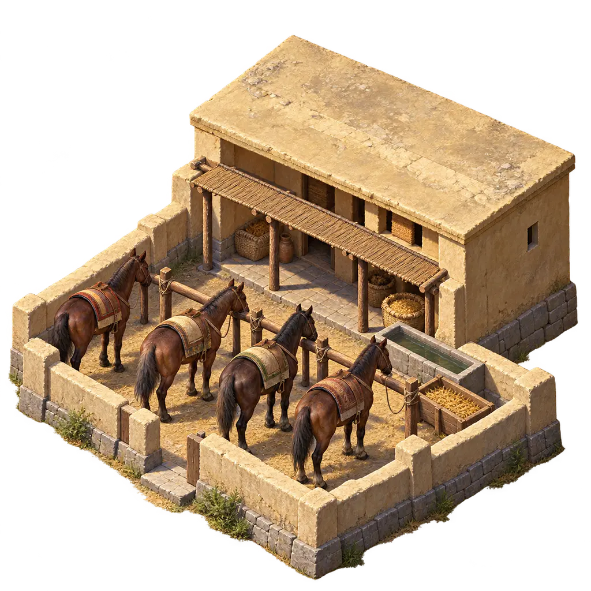
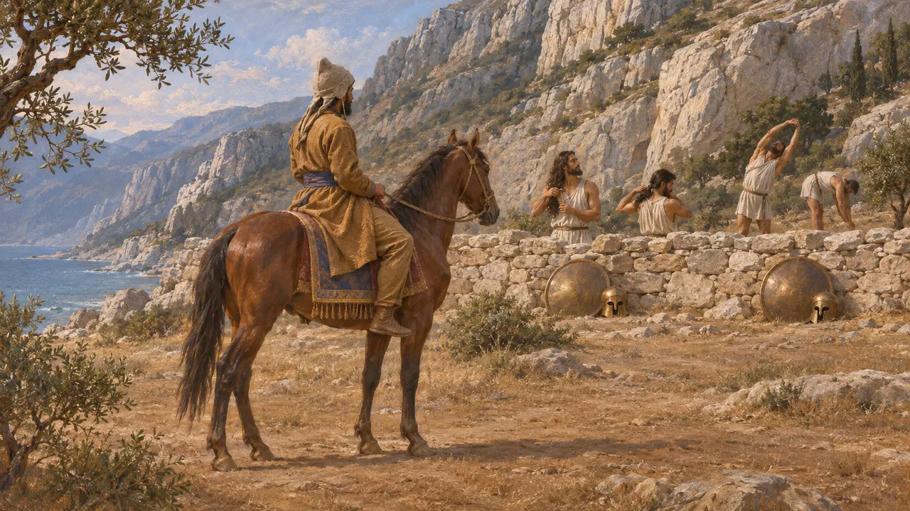
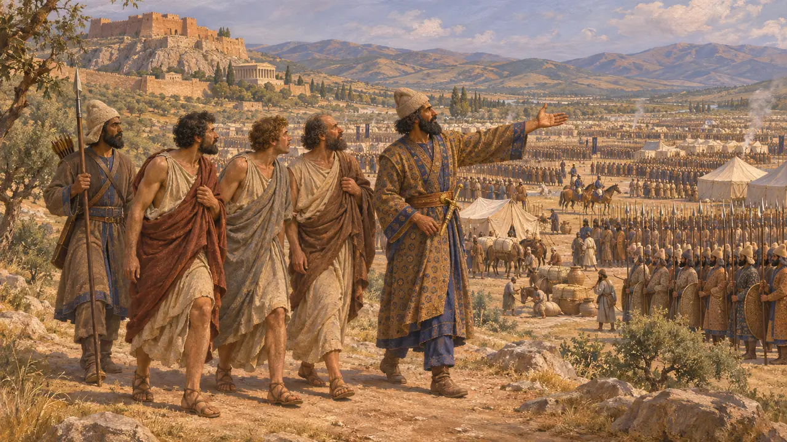
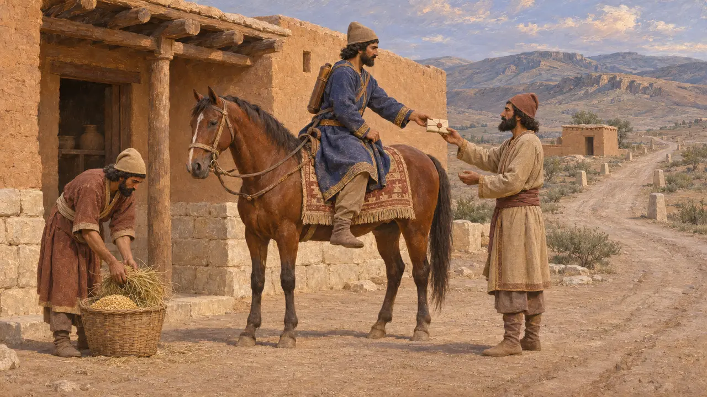
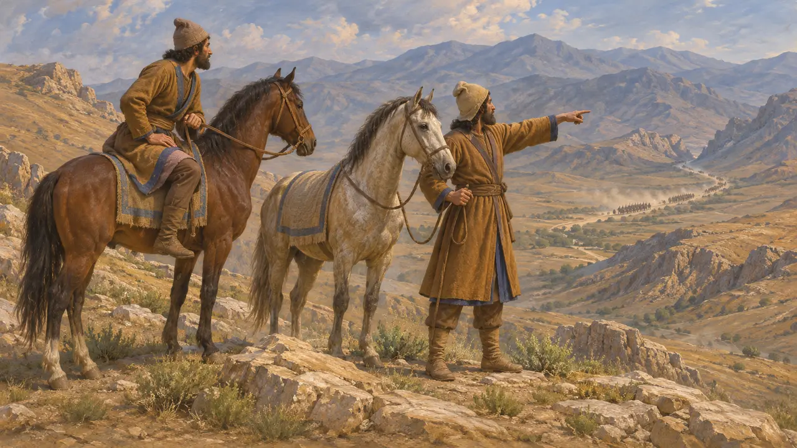

Scout Post
Riders sent ahead to look at the land and the enemy, Achaemenid armies, 6th-5th centuries BCE
Dans le jeu : Niveau 1 : Le Tombeau du fondateur
Persian commanders sent riders ahead to see the ground, count the enemy and bring word back. Herodotus tells how Xerxes sent a single horseman to look at the Greeks holding Thermopylae, and how the King let Greek spies caught in his camp see everything. The game's Scout Post is a place where such riders are kept and sent out.
Dans le jeu : In the game the Scout Post is the first military building: its scouts ride on their own to land no one has seen and lift the fog over it. No Achaemenid text names a scouts' building; the post is the game's simplification of riders kept by a garrison or a station of the King's road.

A horseman at Thermopylae
Récit antiqueHerodotus says that while Xerxes waited at Thermopylae he sent a mounted scout to see how many the Greeks were and what they were doing. The rider could only see the men outside the wall. He found Spartans exercising and combing their hair, counted them, and rode back unhindered, for no one paid him any attention.
Herodotus 7.208

Spies shown round the camp
Récit antiqueHerodotus also says the Greeks sent three spies to Sardis to see the King's army. They were caught and condemned, but Xerxes had them led round the whole host and sent home, reasoning that word of its size would make the Greeks give up their freedom without a fight.
Herodotus 7.146-147

Riders on the King's roads
Dans les sourcesThe Persepolis Fortification tablets, written between about 509 and 493 BCE, record rations and fodder for express messengers and other travellers on the royal roads, who carried sealed passes. The same roads and stations that carried the King's letters could carry a report from the frontier at speed.
R. T. Hallock, Persepolis Fortification Tablets, 1969

The King's eyes and ears
ContestéGreek writers say the Persian king had many 'eyes and ears' who reported to him, and Xenophon makes this a gift of Cyrus. Historians argue whether this was a body of officials, an honorary title, or a Greek picture of an all-seeing despot. The game's scouts look only at the land, not at the King's subjects.
Xenophon, Cyropaedia 8.2.10-12; P. Briant, From Cyrus to Alexander, 2002
Sources
- Herodotus 7.146-147; 7.208
- R. T. Hallock, Persepolis Fortification Tablets, 1969
- Xenophon, Cyropaedia 8.2.10-12
- P. Briant, From Cyrus to Alexander, 2002